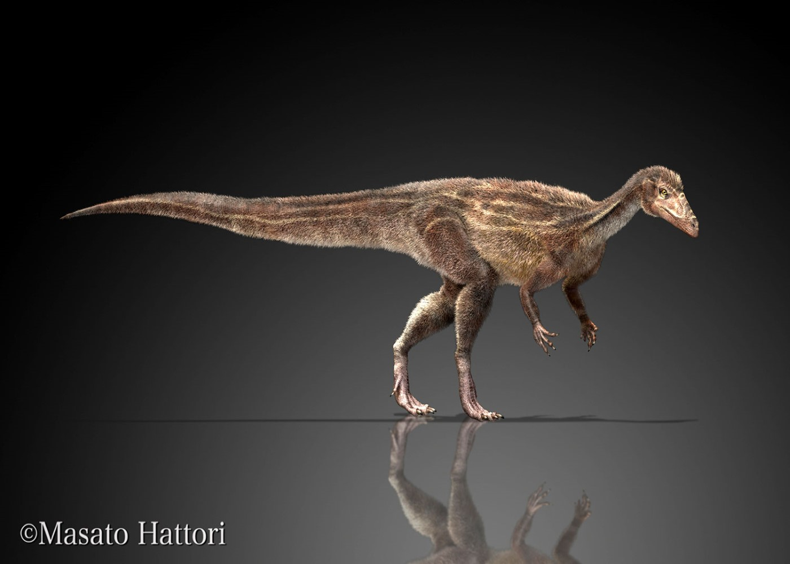
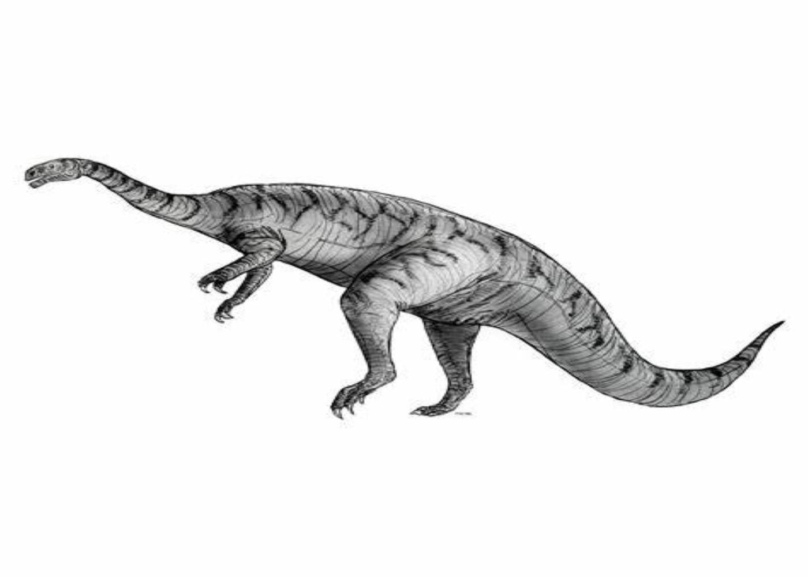
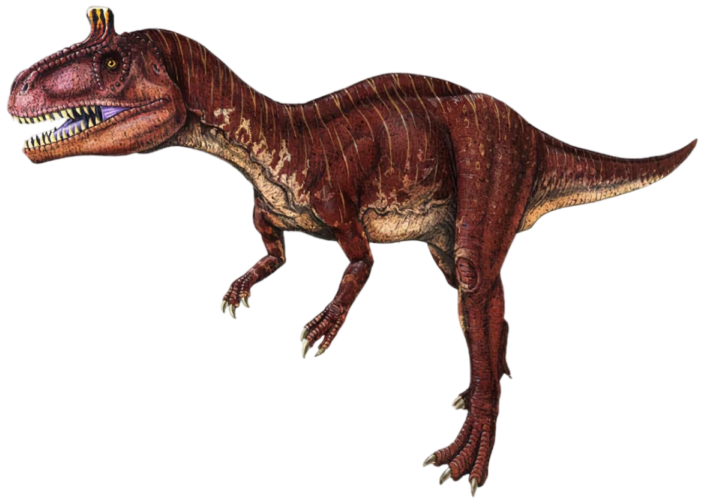
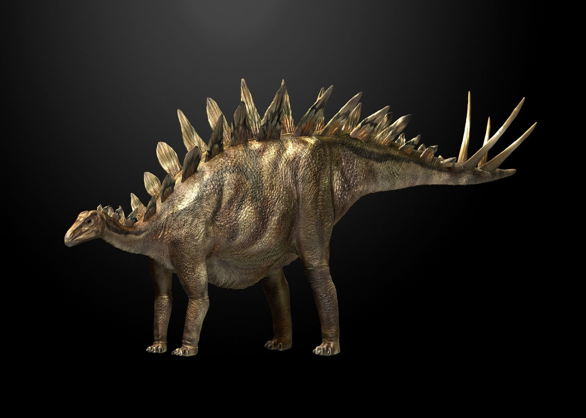
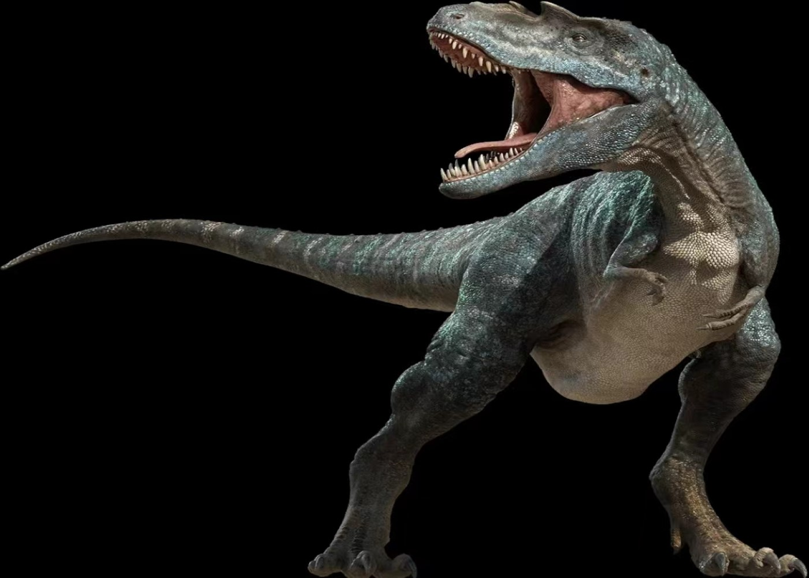
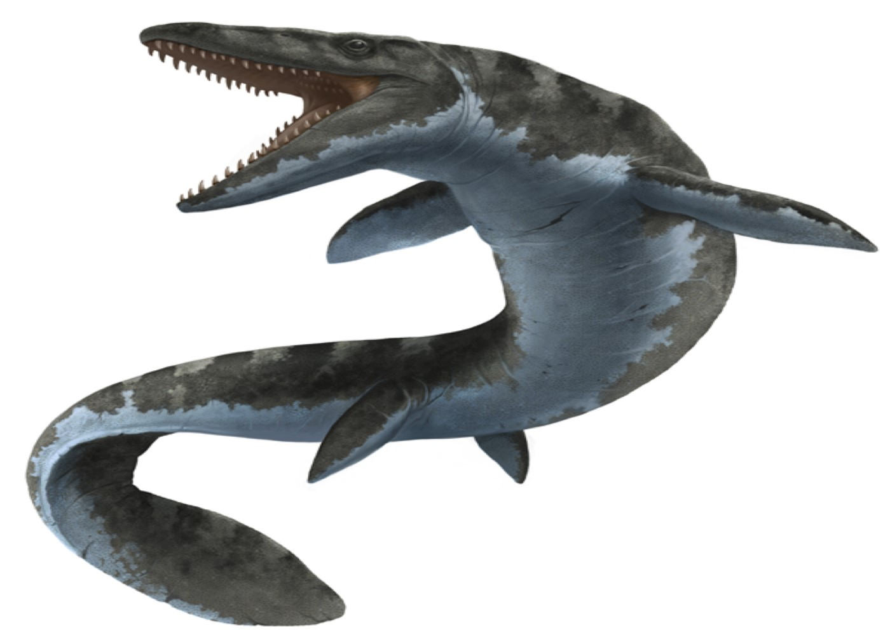

姓名：始盗龙
身高：未知
体长：1 ~ 1.5米
体重：5 ~ 7kg
食性：杂食
冷知识：很多人都认为恐龙一定是一个非常高大的个体，但是始盗龙却是整个恐龙家族中比较矮小的一位，它们是一种小型恐龙。

姓名：板龙
身高：约 3.6 米
体长：6 ~ 8米
体重：约 5 吨
食性：植食
冷知识：板龙——是生活在地球上食植物第一种巨型恐龙，板龙出现以前，最大的植食类动物的身材也就像一头猪那样大。

姓名：哥斯拉龙
身高：4 ~ 5.5 米
体长：1 ~ 1.5米
体重：5 ~ 7kg
食性：杂食
冷知识：哥斯拉龙——很可能是叠纪时期个子最大的肉食性恐龙，所以被称为三叠纪的陆地上霸主。


姓名：梁龙
身高：约 4 米
体长：25 ~ 30米
体重：约 10 吨
食性：植食
冷知识：梁龙——梁龙的尾巴和头非常的长，脖子可以达到 7.5 米，尾巴可以达到 14 米长，整体相当于 6 辆小汽车。

姓名：冰脊龙
身高：约 2.5 米
体长：约 6.5米
体重：约 450 kg
食性：食肉
冷知识：冰脊龙——第一种发现于南极洲的肉食性恐龙,由于南极洲冬季长达6个月，它必须维持足够高的体温才能避免被冻僵，这说明它有可能是温血动物

姓名：剑龙
身高：2.4 ~ 3.5 米
体长：7 ~ 9米
体重：2 ~ 4吨
食性：草食
冷知识：剑龙——巨大的剑龙头部非常小，脑容量甚至比小狗还小，因此科学家认为它们是一种很笨的恐龙。剑龙是典型的食草恐龙。


姓名：霸王龙
身高：4 ~ 6 米
体长：11.5 ~ 14.7米
体重：约 9 吨
食性：食肉
冷知识：霸王龙——拥有史上最强的咬合力，它们的咬合力一般9万牛顿—12万牛顿，约为鳄鱼咬合力（1.6万牛顿左右）的6倍。

姓名：沧龙
体长：15 ~ 17米
体重：17 ~ 24吨
食性：食肉
冷知识：沧龙——史前海洋世界的绝对霸主，最主要的食物有蛇齿龙、金厨鲨、海龟、薄片龙等。

姓名：伤齿龙
身高：约 1 米
体长：约 2 米
体重：约 50 kg
食性：食肉
冷知识：伤齿龙——最聪明的恐龙之一，袋鼠的IQ大约在0.7。而伤齿龙的IQ高达5.3！可能和今天鸟类的智力相似。